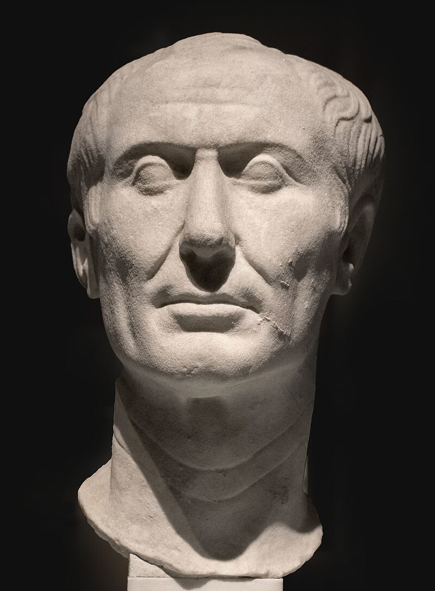

Gaius Julius Caesar ( 12 July 100 BC – 15 March 44 BC ) was a Roman general and statesman. A member of the First Triumvirate, Caesar led the Roman armies in the Gallic Wars before defeating his political rival Pompey in a civil war, and subsequently became dictator from 49 BC until his assassination in 44 BC. He played a critical role in the events that led to the demise of the Roman Republic and the rise of the Roman Empire.
In 60 BC, Caesar, Crassus, and Pompey formed the First Triumvirate, an informal political alliance that dominated Roman politics for several years. Their attempts to amass political power were opposed by many in the Senate, among them Cato the Younger with the private support of Cicero. Caesar rose to become one of the most powerful politicians in the Roman Republic through a string of military victories in the Gallic Wars, completed by 51 BC, which greatly extended Roman territory. During this time he both invaded Britain and built a bridge across the river Rhine. These achievements and the support of his veteran army threatened to eclipse the standing of Pompey, who had realigned himself with the Senate after the death of Crassus in 53 BC. With the Gallic Wars concluded, the Senate ordered Caesar to step down from his military command and return to Rome. In 49 BC, Caesar openly defied the Senate's authority by crossing the Rubicon and marching towards Rome at the head of an army.[3] This began Caesar's civil war, which he won, leaving him in a position of near-unchallenged power and influence in 45 BC.
After assuming control of government, Caesar began a programme of social and governmental reform, including the creation of the Julian calendar. He gave citizenship to many residents of far regions of the Roman Republic. He initiated land reforms to support his veterans and initiated an enormous building programme. In early 44 he was proclaimed "dictator for life" (dictator perpetuo). Fearful of his power and domination of the state, a group of senators led by Brutus and Cassius assassinated Caesar on the Ides of March (15 March) 44 BC. A new series of civil wars broke out and the constitutional government of the Republic was never fully restored. Caesar's great-nephew and adopted heir Octavian, later known as Augustus, rose to sole power after defeating his opponents in the last civil war of the Roman Republic. Octavian set about solidifying his power, and the era of the Roman Empire began.
Caesar was an accomplished author and historian as well as a statesman; much of his life is known from his own accounts of his military campaigns. Other contemporary sources include the letters and speeches of Cicero and the historical writings of Sallust. Later biographies of Caesar by Suetonius and Plutarch are also important sources. Caesar is considered by many historians to be one of the greatest military commanders in history.[4] His cognomen was subsequently adopted as a synonym for "Emperor"; the title "Caesar" was used throughout the Roman Empire, giving rise to modern descendants such as Kaiser and Tsar. He has frequently appeared in literary and artistic works.
Based on remarks by Plutarch, Caesar is sometimes thought to have suffered from epilepsy. Modern scholarship is sharply divided on the subject, and some scholars believe that he was plagued by malaria, particularly during the Sullan proscriptions of the 80s BC. Other scholars contend his epileptic seizures were due to a parasitic infection in the brain by a tapeworm.
Caesar had four documented episodes of what may have been complex partial seizures. He may additionally have had absence seizures in his youth. The earliest accounts of these seizures were made by the biographer Suetonius, who was born after Caesar died. The claim of epilepsy is countered among some medical historians by a claim of hypoglycemia, which can cause epileptoid seizures.
A line from Shakespeare has sometimes been taken to mean that he was deaf in one ear: "Come on my right hand, for this ear is deaf".[259] No classical source mentions hearing impairment in connection with Caesar. The playwright may have been making metaphorical use of a passage in Plutarch that does not refer to deafness at all, but rather to a gesture Alexander of Macedon customarily made. By covering his ear, Alexander indicated that he had turned his attention from an accusation in order to hear the defence.
Francesco M. Galassi and Hutan Ashrafian suggest that Caesar's behavioral manifestations – headaches, vertigo, falls (possibly caused by muscle weakness due to nerve damage), sensory deficit, giddiness and insensibility – and syncopal episodes were the results of cerebrovascular episodes, not epilepsy. Pliny the Elder reports in his Natural History that Caesar's father and forefather died without apparent cause while putting on their shoes.[261] These events can be more readily associated with cardiovascular complications from a stroke episode or lethal heart attack. Caesar possibly had a genetic predisposition for cardiovascular disease.
Suetonius, writing more than a century after Caesar's death, describes Caesar as "tall of stature with a fair complexion, shapely limbs, a somewhat full face, and keen black eyes".
Some ancient sources refer to the possibility of the tyrannicide, Marcus Junius Brutus, being one of Julius Caesar's illegitimate children.[266] Caesar, at the time Brutus was born, was 15. Most ancient historians were sceptical of this and "on the whole, scholars have rejected the possibility that Brutus was the love-child of Servilia and Caesar on the grounds of chronology".